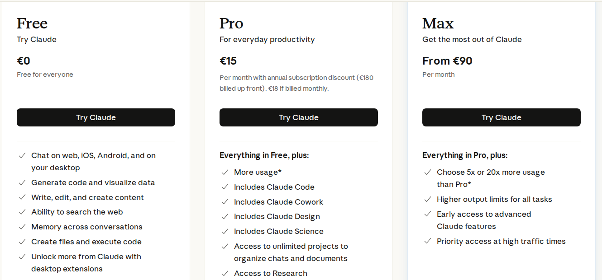
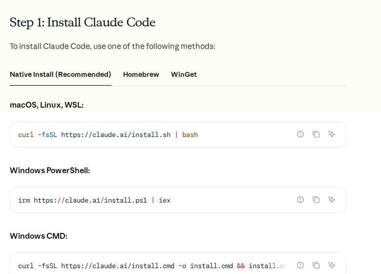

Что купить и поставить
Первый урок скучный и обязательный: без оплаченного доступа и работающего окна с Клодом остальные одиннадцать уроков читать бессмысленно. Задача вечера: заплатить один раз, поставить одну программу и получить первый ответ на своём компьютере.
Клод отвечает на вашем компьютере, оплата решена, доступ стабильный
Зачем это в деньгах
Подписка стоит около 18 евро в месяц, это примерно двадцать долларов. Это примерно столько же, сколько два обеда, и меньше, чем один час работы бухгалтера. Дальше по программе вы соберёте систему, которая сама разбирает заявки: у меня она делает работу, на которую раньше уходило по 3-4 часа в день у двух человек. Считать окупаемость будем в уроке 3, когда замерим ваши сегодняшние цифры. Сейчас важно другое: не потратить лишнего на старте.
Что покупать и что не покупать
Возьмите один тариф и ничего больше. Соблазн скупить десять сервисов на старте огромный, а нужен ровно один инструмент, который умеет читать ваши файлы, писать код и запускать его на вашем компьютере.
| Что | Нужно ли сейчас | Сколько |
|---|---|---|
| Claude Pro (личная подписка) | Да, это ваш основной инструмент | 18 € в месяц, или 15 € при оплате за год |
| Claude Max | Нет. Понадобится, если система вырастет и вы упрётесь в лимит | от 90 € в месяц |
| Ключ к API (оплата по запросам) | Нет, до урока 6 | по расходу |
| Отдельный сервер | Нет, до урока 5 | 300-700 ₽ в месяц |
| Сервисы «ИИ-картинки», «ИИ-видео», боты-конструкторы | Нет. Ни один из них не приблизит вашу систему | от 10 $ каждый |
Разбирая чужой курс по автоматизации, я насчитал в его программе больше десяти платных сервисов, которые предлагают оформить в первые же недели. Для обзора это нормально, для дела вредно: человек платит 150 долларов в месяц, а рабочей системы у него по-прежнему нет.
Правило на всю программу: новый платный сервис появляется только тогда, когда без него следующий шаг физически не сделать. Раньше не покупаем.
Как заплатить из России
Карта российского банка на сайте Anthropic не проходит. Работают два пути.
- Зарубежная карта, своя или родственника, оформленная в банке страны, которую сервис обслуживает.
- Сервис-посредник, который выдаёт виртуальную карту и принимает рубли. Берёт комиссию, обычно 5-10%.
Какой посредник брать сейчас, я скажу на созвоне лично: они появляются и закрываются, писать конкретное название в вечный текст бессмысленно. Что важно проверить в любом случае:
- карта поддерживает регулярные списания, иначе подписка отвалится через месяц;
- на карте лежит запас, списание идёт в долларах и курс плавает;
- почта, на которую регистрируетесь, ваша личная и с доступом на много лет вперёд. Аккаунт будет держать всю систему, менять его потом больно.

Доступ
Anthropic не обслуживает Россию, поэтому нужен зарубежный адрес. Требования простые: страна из списка обслуживаемых, стабильная скорость, работа без разрывов по часу. Дешёвые бесплатные варианты не подходят: они рвут соединение посреди работы, и вы будете терять ответы на середине.
Откройте claude.ai. Если страница открылась и вошла в аккаунт, доступ рабочий. Если видите отказ по региону, значит адрес не годится, меняйте страну и проверяйте снова. Тратить время на установку программ до этой проверки не надо.
Ставим Клода на свой компьютер
Клод в браузере отвечает на вопросы. Нам нужно больше: чтобы он читал ваши файлы, писал программы и запускал их. Это делает Claude Code, отдельная программа для вашего компьютера. Два способа поставить, выбирайте первый.
Способ 1, приложением. Скачайте Claude Code для Windows или Mac с сайта Anthropic, установите как обычную программу, запустите, войдите в аккаунт кнопкой. Ничего больше не требуется.
Способ 2, одной командой в терминале. Так рекомендует сама Anthropic, и так будет удобнее в уроке 5, когда мы переедем на сервер. Открываете терминал (на Windows это PowerShell, на Mac Терминал) и вставляете одну строку.

Есть и третий способ, через менеджер пакетов Node.js (npm install -g @anthropic-ai/claude-code). Он рабочий, но требует заранее поставленного Node.js версии 18 или выше, поэтому для старта берите первые два.
После установки запускаете claude, программа открывает браузер и просит войти в аккаунт. Вошли, вернулись в окно, увидели приглашение к вводу. Это и есть рабочее место на все двенадцать уроков.
Первый разговор
Не начинайте со сложного. Задача первого разговора: убедиться, что программа видит ваши файлы. Создайте на диске папку, например claude, положите в неё любой рабочий файл (прайс, накладную, письмо от клиента) и откройте эту папку в Клоде. Дальше попросите словами:
Посмотри файл в этой папке и расскажи своими словами, что в нём лежит: что это за документ, для чего он нужен в бизнесе и какие данные в нём есть. Никаких изменений не делай, только опиши.
Если в ответ пришёл разбор именно вашего файла, урок закрыт. Если Клод отвечает общими словами и файла не видит, значит вы открыли не ту папку.
Держите работу в отдельной папке. Когда я начинал, я запускал Клода в папке, где лежало всё сразу: загрузки, документы, фотографии. Он честно прочитал что дали и предложил переименовать половину. Отдельная папка под задачу это не аккуратность ради аккуратности, а защита от случайных правок в ваших настоящих документах. К уроку 1 мы это оформим в правило.
Задание к созвону
Покажите экраном: кабинет с активной подпиской, окно Клода на вашем компьютере и его ответ про ваш собственный файл. Три экрана, минута времени. Если что-то не получилось, отметьте это в отчёте и напишите, на каком шаге встали.
Чек-лист «сделано»
Отметьте сделанное выше, впишите, где застряли, и нажмите кнопку: текст скопируется, останется отправить его в мессенджер.
Формат уроков подсмотрен у курса «AI Superpowers» (sfer.ai). Тексты, примеры и «грабли» здесь свои.